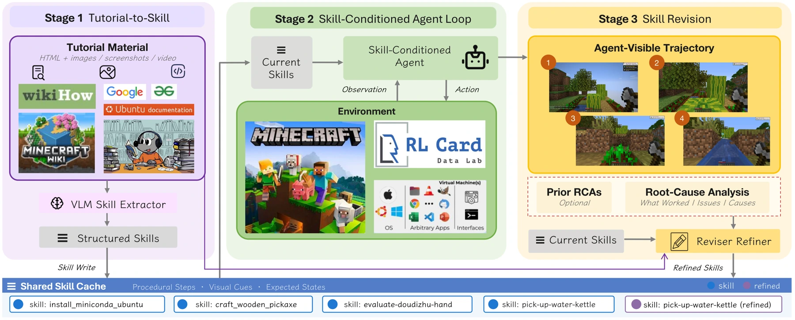
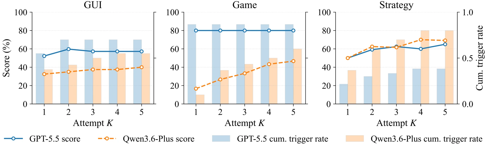

The web is full of instructions for doing things and almost none of them were written for machines. A tutorial says drag it until it snaps, shows a screenshot instead of naming the element, and assumes you will notice when a step has failed. Hand that text to an agent and you have given it reading material, not a procedure.
网络上到处都是教人做事的说明，而几乎没有一种是写给机器看的。教程说拖到吸附为止，用截图代替元素名称，并默认你能察觉某一步失败了。把这样的文本交给智能体，你给的是阅读材料，不是可执行流程。
The gap is not about retrieval or length, it is about form. A guide describes a goal; a skill has to be a sequence the agent can execute, check, and repair when the environment disagrees. MMG2Skill names this guide-to-skill learning and treats the conversion itself — not the final score — as the thing worth studying.
差距不在检索或长度，而在形式。指南描述的是一个目标，技能则必须是一串智能体可以执行、可以校验、并在环境不符合预期时能够修复的步骤。MMG2Skill 把这件事命名为 guide-to-skill learning，并把转换过程本身——而不是最终分数——当作值得研究的对象。
Its answer is a closed loop over an editable artifact. Guides are compiled into skills, the skills condition a fixed vision-language agent during execution, and a trajectory-level analyzer rewrites them afterwards. Across GUI control, open-ended gameplay and strategic card play with six backbones, the macro-average gain is 12.8 to 25.3 percentage points.
它的解法是围绕一个可编辑产物建立闭环：指南被编译成技能，技能在推理时约束一个固定的视觉语言智能体，轨迹级分析器随后改写技能。在 GUI 控制、开放式游戏与策略卡牌三类任务、六个骨干模型上，宏观平均增益为 12.8 到 25.3 个百分点。
A guide is not a skill: tutorials assume a human executor, mix text with images and leave recovery steps implicit. The framework compiles them into an editable procedure instead of prompting with the raw text.
指南不等于技能：教程假定执行者是人，图文混杂，恢复步骤隐含不写。该框架把指南编译成可编辑的流程，而不是把原文直接塞进提示词。
Revision is driven by trajectory-level root-cause analysis, never by benchmark scores, and the vision-language model is never updated — everything learned lives in the skill library.
修订由轨迹级的根因分析驱动，从不使用基准分数；视觉语言模型始终不更新——学到的东西全部存放在技能库中。
Raw guides can actively hurt. Prompting with the unprocessed guide degrades performance, while structured construction and trajectory-driven revision are each necessary for the +12.8 to +25.3 point macro-average gains.
原始指南可能起反作用：直接用未处理教程提示会拉低表现；结构化构建与轨迹驱动修订各自都是 +12.8 到 +25.3 点宏观平均增益的必要条件。
What a skill has to be技能必须是什么样子
The design constraint is editability. If the learned artifact is a note in natural language, there is no well-defined operation for fixing the step that failed. If it is a structured procedure, a failed attempt can be traced to a specific instruction and that instruction can be changed.
设计上的硬约束是可编辑性。如果学到的产物是一段自然语言笔记，那么修复失败的步骤就没有定义良好的操作；如果它是一份结构化流程，失败的尝试就能定位到某条具体指令，而那条指令可以被改写。
This is also why the vision-language model stays frozen. Weight updates would make the improvement uninterpretable and would confound two different claims — that the agent got better, and that the procedure got better. With a fixed backbone, whatever changes is the skill text, and you can read it.
这也是视觉语言模型保持冻结的原因。更新权重会让改进变得不可解释，并把两个不同的论断混在一起——智能体变强了，还是流程变好了。骨干固定时，变化的内容只有技能文本，而它是可以读的。
Construction is therefore a translation problem with a target format. Multimodal guides — screenshots, annotated images, surrounding prose — have to be collapsed into a procedure that refers to what the agent can actually perceive and act on. Prerequisites a human reader infers have to be made explicit, because the executor will not infer them.
因此构建是一项有目标格式的翻译任务。多模态指南——截图、标注图、周围正文——必须被压缩成一份只引用智能体真正能感知和操作的对象的流程。人类读者会自行补全的前置条件必须写明，因为执行者不会自行补全。


Closing the loop on the agent’s own trajectories用智能体自己的轨迹闭合环路
After execution, the analyzer reads the trajectory, asks what actually went wrong, and edits the skill accordingly. The feedback is deliberately not the benchmark score: a pass/fail number cannot say which step caused the failure, and using it would tie the skill library to the evaluation set.
执行之后，分析器读取轨迹，判断究竟哪里出了问题，并据此修改技能。反馈刻意不使用基准分数：一个通过与失败的二进制数无法说明是哪一步造成的失败，而且使用它会把技能库绑定到评测集上。
The same backbone is used for construction, execution, analysis and refinement. That is a control as much as a convenience — a stronger external teacher doing the analysis would make it impossible to tell whether the gains come from the loop or from the teacher.
构建、执行、分析与精修使用同一个骨干模型。这既是便利也是对照——若由一个更强的外部教师来做分析，就无法分辨收益来自闭环还是来自教师。
MMG2Skill-Bench supplies the testbed across GUI tasks, gameplay and strategic card play, the last of which adds private information the agent cannot observe. That setting is analysed separately, and for a reason: if the decisive information is hidden, no amount of trajectory analysis can recover the true cause of a failure.
MMG2Skill-Bench 提供了覆盖 GUI 任务、游戏与策略卡牌的测试平台，最后一类还引入了智能体无法观测的私有信息。这个场景被单独分析是有原因的：如果决定性信息是隐藏的，再多的轨迹分析也无法还原失败的真正原因。
Where the gains come from增益来自哪里
Main results compare three conditions — no skills, raw guides, and the full loop — averaged over six backbones with five attempts allowed and the analyzer’s early-stop decision in force. Every model-domain setting improves, with macro-average gains between 12.8 and 25.3 points.
主实验比较三种条件——无技能、原始指南、完整闭环——在六个骨干模型上取平均，允许五次尝试并启用分析器的早停判断。每一个模型与领域的组合都有提升，宏观平均增益在 12.8 到 25.3 个点之间。
The most informative ablation is the one that fails. Prompting with raw guides can reduce performance: unstructured instructions add noise and misleading detail, and the agent has no way to tell which part of a tutorial applies to the state it is in. Structure is doing real work, not re-tokenising the same content.
最能说明问题的消融是那个失败的情形。直接用原始指南提示会降低表现：非结构化的说明带来噪声和误导性细节，而智能体无法判断教程的哪一部分适用于当前状态。结构本身在做实质工作，而不是把同样的内容重新切词。
Removing revision removes the rest of the gain, which separates the two contributions cleanly. Early stopping is a third and separate effect: when the success signal is calibrated, the analyzer can stop before the attempt budget is spent, saving 25%–53% of attempts and avoiding the late-stage regressions that come from continuing to edit an already-correct skill.
去掉修订就去掉了剩余的增益，这把两者的贡献干净地分开。早停是第三个独立效应：当成功信号经过校准，分析器可以在尝试预算耗尽之前停止，节省 25%–53% 的尝试次数，并避免继续修改一个已经正确的技能所导致的后期退化。


An improvement you can read, and one that can be misled可读的改进，也会被引偏的改进
Because nothing is written into the weights, this is self-improvement in a form you can audit. Given a failing run you can point to the instruction that changed and to the trajectory that caused the change. For deployment, that traceability is often worth more than the raw score.
由于没有任何内容被写入权重，这是一种可以审计的自我改进形式。给定一次失败的运行，你能指出哪条指令被改了、以及是哪条轨迹导致了这次修改。对部署而言，这种可追溯性往往比裸分数更有价值。
The corresponding weakness is calibration. An analyzer that declares success too early will preserve a skill that happened to work once, and the procedure stops evolving. The paper’s caveat is precise: early stopping helps when the success signal is properly calibrated, which is a property of the environment rather than of the method.
相应的弱点在校准。一个过早宣布成功的分析器会保留下某个碰巧奏效过一次的技能，流程就此停止演化。论文的限定说得很准：早停只在成功信号经过恰当校准时才有帮助，而这属于环境的性质，不属于方法的性质。
That is the boundary to carry away. Where the outcome is observable from the trajectory, the loop closes and the skill library compounds. Where decisive information is hidden — a card the agent cannot see, a server state it cannot query — root-cause analysis is guessing, and the honest expectation is no gain rather than a smaller one.
这是需要带走的边界。当结果可以从轨迹中观测时，闭环成立，技能库持续积累；当决定性信息被隐藏——智能体看不到的一张牌、查不到的服务端状态——根因分析就是在猜测，此时诚实的预期是没有增益，而不是增益变小。
Paper & authors
MMG2Skill: Can Agents Distill In-the-Wild Guides into Self-Evolving Skills?
arXiv 2026
Cite this work
@misc{che2026mmg2skillagentsdistillinthewild,
title = {MMG2Skill: Can Agents Distill In-the-Wild Guides into Self-Evolving Skills?},
author = {Xinyu Che
and Junqi Xiong
and Yunfei Ge
and Xinping Lei
and Shihao Li
and Hang Yan
and Han Li
and Yuanxing Zhang
and Zhiqi Bai
and Jinhua Hao
and Ming Sun
and Han Li
and Jiaheng Liu},
year = {2026},
eprint = {2606.01993},
archivePrefix = {arXiv},
primaryClass = {cs.CL},
url = {https://arxiv.org/abs/2606.01993}
}